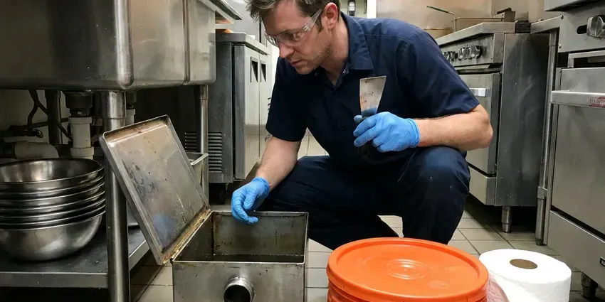

Garbage Disposal Replacement in Evanston, IL
Upgrade to a modern garbage disposal in Evanston, IL with a clean install and a strong warranty.
- Upfront Pricing
- Quality Parts
- All Major Brands
- Quick, Same-Day Service

Time for a New Garbage Disposal in Evanston, IL?
Don't let a broken disposal disrupt your kitchen routine any longer, contact us for prompt service.
Trusted Garbage Disposal Replacement for Evanston, IL Homeowners
HVM Plumbing focuses on professional garbage disposal replacement, ensuring your kitchen plumbing operates smoothly. We handle everything from safe removal of your old unit to the careful installation of a new, efficient model, tailored to your kitchen's needs in Evanston, IL.
Our expertise includes:
- Installing new, powerful disposal units
- Upgrade to InSinkErator Evolution and other quiet models
- Careful installation of new garbage disposals.

Additional Kitchen Plumbing Services in Evanston, IL
Our kitchen plumbing services in Evanston, IL cover sinks, disposals, dishwashers, and grease traps so your kitchen stays clean, safe, and fully functional.




Evanston grease trap cleaning specialists

Customers
Why Choose HVM Plumbing for Garbage Disposal Replacement in Evanston, IL?
New disposals are quieter, more efficient and better at grinding. Many also come with stronger warranties.
- Upgrade Options, We offer quieter, stronger models for any budget.
- Quick Swaps, Most replacements are finished in about an hour.
- Code Compliance, All replacements follow local Evanston, IL plumbing codes, ensuring safe and legal operation.
Citywide Coverage
We replace garbage disposals in homes throughout Evanston, from older kitchens to newer builds. Same-day service is available most days.
Experienced Team
The HVM Plumbing team is well trained in the details of garbage disposal replacement. They understand the common issues specific to Evanston homes, delivering a precise and long-lasting installation every time.
Safety-First Approach
We follow Illinois plumbing code for trap and dishwasher drain connections. Old units are removed and disposed of properly.
Trusted Certified Evanston Plumbing Services Professionals
At HVM Plumbing, we take pride in providing certified plumbing services throughout Evanston, IL. Backed by leading industry credentials, our experienced plumbers combine technical skill with genuine customer care. Whether it is repair, installation, or maintenance, we follow strict safety and quality standards to deliver lasting results you can trust.
Call Us Now PHCC Plumbing Contractor Recognition
PHCC Plumbing Contractor Recognition Better Business Bureau (BBB) Accreditation
Better Business Bureau (BBB) Accreditation Angi Certified Pro
Angi Certified Pro ISO 9001 Quality Management Certification
ISO 9001 Quality Management CertificationProfessional Garbage Disposal Replacement Services in Evanston, IL
Leaking Disposal Replacement in Evanston
A leaking garbage disposal can cause serious water damage under your sink cabinet and attract pests. Often, leaks point to internal damage or a cracked housing, making repair difficult or impossible. In these cases, replacement is the best course of action. We quickly disconnect the old, leaking unit, clean up any water damage, and install a new disposal, making sure all seals and connections are watertight to prevent future leaks.

Upgrading to a Quieter Disposal in Evanston
Older disposals can be loud and vibrate the sink. Newer models include sound insulation and anti-vibration mounts. We help you choose a quieter unit and install it carefully. Many customers are surprised at how much quieter their kitchen becomes.
Standard Garbage Disposal Replacement in Evanston
When your existing garbage disposal fails due to wear and tear, a standard replacement is often the most cost-effective solution. We remove the old unit, carefully clean the connection points, and install a brand-new disposal, ensuring proper alignment with the sink drain and secure electrical connections. This service usually takes a few hours and restores full function to your kitchen sink. We ensure no leaks are present before considering the job complete.
Waste King and Moen Disposal Replacement in Evanston, IL
While InSinkErator is popular, we also often replace Waste King and Moen brand garbage disposals in Evanston, IL. Waste King units are often favored for their value and EZ-Mount system, while Moen offers competitive features and warranties. Our technicians are familiar with the specific installation requirements for each brand, ensuring your new disposal is installed according to manufacturer guidelines for strong performance and longevity.
Cost-Effective Disposal Replacement in Evanston, IL
While replacing a garbage disposal is an investment, HVM Plumbing aims to provide cost-effective solutions for Evanston, IL homeowners. We offer transparent pricing and help you choose a new unit that fits your budget without compromising on quality or performance. Sometimes, repairing an old, inefficient unit can cost more in the long run than installing a new, energy-efficient model with a fresh warranty. We provide clear options to help you make the call.
Emergency Disposal Replacement in Evanston
A completely broken garbage disposal can lead to a blocked sink, especially if it's leaking or grinding loudly without processing waste. For urgent situations, HVM Plumbing offers emergency garbage disposal replacement services in Evanston. We put a priority on these calls to prevent further kitchen plumbing issues, arriving quickly to remove the faulty unit and install a new one, getting your sink back in working order as soon as possible.
Old Unit Removal and New Installation in Evanston, IL
Our comprehensive service includes the complete removal and proper disposal of your old, defunct garbage disposal unit. Following removal, we carefully install your new chosen model, ensuring all plumbing and electrical connections are made safely and correctly. We test the new unit thoroughly to confirm proper operation and clean up the work area before we leave your Evanston, IL home. You won't have to worry about a thing.

InSinkErator Replacement in Evanston, IL
If you already have an InSinkErator, replacement is usually quick because the mounting system often matches. We can upgrade from a Badger to an Evolution model for quieter operation and better grinding. We follow the brand's specs for wiring and drains. We also register the warranty for you.
Garbage Disposal Replacement Near Me in Evanston, IL
When your disposal fails, you need a replacement fast. Our team works in Evanston every day and carries popular models. Most replacements are finished in about an hour.
When your kitchen sink is backed up due to a faulty disposal, you need a plumbing company that responds fast. We pride ourselves on being the go-to source for garbage disposal replacement for residents of Evanston, offering professional service you can trust.
HVM Plumbing at a Glance
- Fully licensed plumbing team covering Evanston, IL
- Same-day appointments and 24/7 emergency response
- Clear written estimates, no hidden fees
- 4.8-star rated by 528+ Illinois customers
Evanston Map
Evanston Information
- Population
- 75,070
- Area codes
- 847/224/312
- Service area
- Evanston and communities within 40 miles
- Nearby
- Skokie, Glenview, Des Plaines, Oak Park
For homes in Evanston, IL, a reliable garbage disposal is a must. Hard water across much of Illinois leaves scale in water heaters, faucets, and appliances, so softeners are a common upgrade.
Expert Services
Trust our professionals for reliable HVM Plumbing solutions in Evanston, IL.
Our Specialized Plumbing Services in Evanston, IL
At HVM Plumbing, we provide a complete range of plumbing services across Evanston, IL. From leak detection to full system installations, our team ensures fast, precise, and affordable service for both residential and commercial properties. Explore our core services below:


How Our Garbage Disposal Replacement Service Works in Evanston, IL
Our garbage disposal replacement process is designed to be straightforward and stress-free for homeowners in Evanston, IL.
Request a Quote
Contact HVM Plumbing by calling (773) 903-7643 to schedule an appointment. We will discuss your needs and provide an upfront estimate for the replacement service.
On-Site Assessment
Our licensed plumber will arrive at your Evanston home to assess your current disposal, discuss replacement options, and help you select the best new unit.
Removal & Install
We'll carefully remove your old disposal, prepare the plumbing, and install your new garbage disposal, testing it thoroughly for proper function.
Frequently Asked Questions About Garbage Disposal Replacement in Evanston
A standard disposal replacement with the unit typically costs $275 to $650. Premium models like InSinkErator Evolution usually run $500 to $1,000 installed.
New garbage disposals typically come with manufacturer warranties ranging from 1 to 10 years, depending on the model and brand. HVM Plumbing also provides a labor warranty on our installation services for your peace of mind.
If your disposal is old, frequently leaking, or making grinding noises without grinding food, replacement is usually more cost-effective and provides a longer-lasting solution. Minor issues like a simple jam can usually be repaired.
Common signs include frequent clogs, loud grinding noises without processing food, persistent leaks from the unit's housing, or if the disposal simply stops turning on. If you notice these issues, it's probably time for a replacement.
Manufacturer warranties typically range from two to ten years, and we guarantee our labor.
Most replacements take about an hour. Upgrades with new electrical or drain changes may take longer.
To help it last, avoid putting fibrous or hard items like corn husks, bones, or coffee grounds down the drain. Always run cold water before and after use, and now and then grind citrus peels to keep it fresh. Regular cold water flushing helps maintain the unit.
We install InSinkErator, Waste King, Moen and GE. We help you pick based on power, noise and warranty.
What People Are Saying About Our Plumbing Experts?

Robert G.
The trenchless sewer replacement saved our front yard. They walked us through the camera inspection footage first so we knew exactly what we were paying for.
Sewer Line Replacement · Skokie, IL
Laura S.
I scheduled a water heater replacement, and the team made the process smooth and affordable. The new unit works perfectly, and they cleaned up after completing the job.
Water Heater Replacement · Oak Park, IL
Emily R.
I called HVM Plumbing for plumbing repair, and the technician was fast, polite, and thorough. They explained the problem clearly and fixed it the same day. I will definitely hire them again. Highly recommended!
Plumbing Repair · Des Plaines, IL
Mark T.
When our office needed drain cleaning, HVM Plumbing provided quick, reliable service. The plumber arrived on time and made sure every drain flowed perfectly before leaving. Very satisfied.
Drain Cleaning · Mount Prospect, IL
Patricia H.
We had a slab leak that two other companies could not find. HVM Plumbing located it in under an hour, explained our options, and the price matched the quote to the dollar.
Slab Leak Repair · Evanston, IL
Daniel K.
A pipe burst at 11 pm and they actually answered. The plumber showed up within the hour, shut everything down, and had us back to normal the next morning. Could not ask for more.
Emergency Plumbing · Mount Prospect, IL